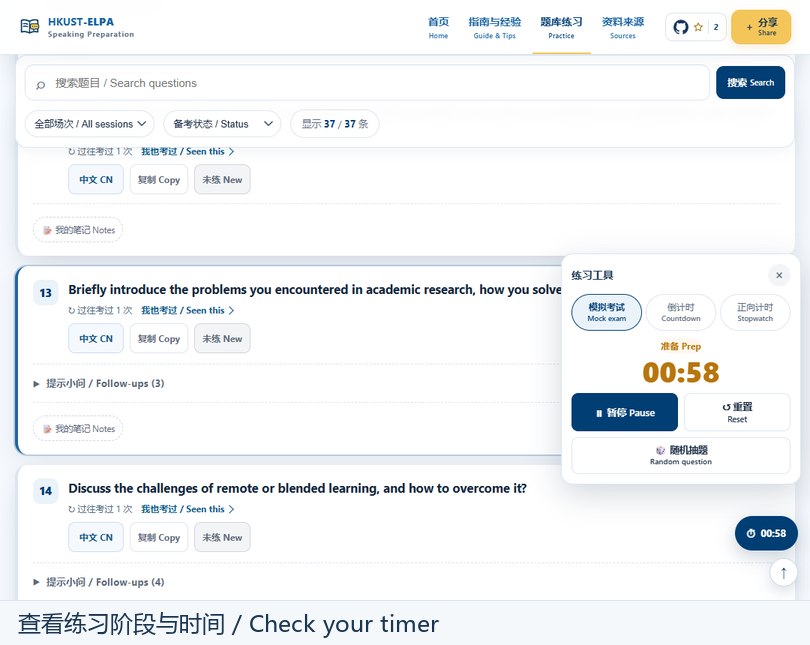
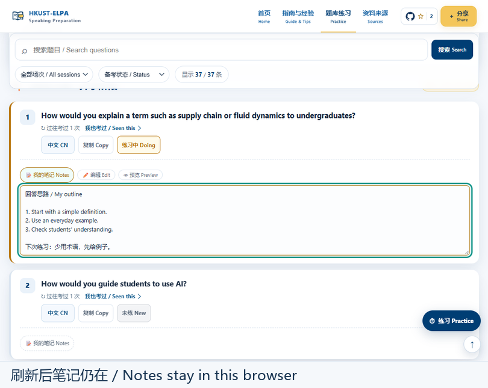

查看考试类型与流程示意
按考试类型切换 ：不用在两套不同流程中反复寻找信息。
资料可追溯 ：学校官方说明和学生经验分别收录在资料来源页。

面向 HKUST 与 HKUST(GZ) 同学：了解考试、找到考题，开口练习并留下复习记录。
先了解考试方式，再选题开口。点击步骤查看用法，熟悉后可直接进入题库。
先看用途，需要时再展开操作说明。
按考试类型切换 ：不用在两套不同流程中反复寻找信息。
资料可追溯 ：学校官方说明和学生经验分别收录在资料来源页。
题库支持选择 GZ / HK 校区及常规 ELPA / Fast Track 类型，并结合考试场次、关键词和练习状态筛选。已收录的较新场次与过往题目分开展示，方便集中准备或回顾旧题。
主问题 + 提示小问 ：英文题干为主，需要时再展开中文释义、相似问法与相关小问。
持续整理的反馈 ：考生补充的提问差异与出现记录可辅助理解题目，但不是官方抽题概率。
不同校区和考试类型的收录情况可能不同；若暂时找不到题目，可先查阅考试指南和资料来源。
先在题库选择考试类型、场次或练习状态，缩小这次练习的范围。
网站会从当前筛选结果中抽出一道题。先看清题目，再决定怎么回答。
选择「模拟考试」时，先有 1 分钟准备，接着进入 2 分钟陈述；你需要自己开口回答。也可以使用单独倒计时或正向计时。
小建议：尽量不看笔记先说完，再回看哪些地方卡住了。练习结束后，可以立即在题目下记笔记。

每次练完都可以标记掌握程度，并在题目下写几句回答思路。下次打开网站时，就能优先找出还不熟悉的题目继续练习，不必每次重新开始。
题目最初显示「未练」；点状态按钮可切换到「练习中」或「已掌握」。说得不顺就先留在练习中，能独立答好了再标记已掌握。
可以写开头怎么说、准备举什么例子、刚才哪里卡住。主问题和提示小问都可以记，不需要使用特殊格式。
用题库的「备考状态」筛选，先练还没掌握的题；练熟后再调整状态。笔记会留在原来的题目下。
在旧设备点击「备份」，下载一份学习记录并妥善保存；将文件传到新设备，打开本站点击「恢复」，选择刚才保存的文件，就能继续查看之前的进度和笔记。
平时不用手动保存。记录默认只保存在当前浏览器；换设备、换浏览器或切换网站地址都不会自动同步。「恢复」会替换当前设备已有的记录，建议先备份再操作。
关于学习记录： 默认只保存在当前浏览器，换设备、换浏览器或切换网站地址不会自动同步；迁移前请「备份」，在新设备「恢复」。恢复会替换已有记录，建议先备份。